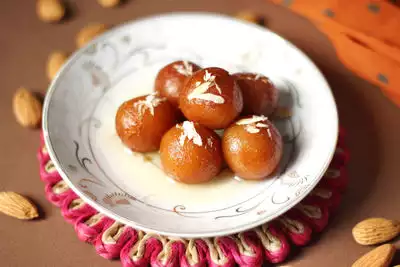

Popular Indian Dishes
Explore the flavors of India through its diverse and rich culinary traditions!
Top 15 Cuisines in India
North Indian Cuisine
North India is known for its rich, aromatic, and flavorful dishes often cooked with ghee and spices:
- Biryani: A fragrant rice dish made with aromatic spices and meat or vegetables.
- Butter Chicken: A creamy, tomato-based curry that's a favorite worldwide.
- Paneer Tikka: Marinated paneer cubes grilled to perfection.

Aromatic and flavorful Biryani
South Indian Cuisine
South India offers a wide array of dishes with a perfect blend of spices and tangy flavors:
- Masala Dosa: A crispy rice crepe stiffed with spicy potato filling.
- Idli and Sambar: Soft rice cakes served with a tangy lentil-based vegetable stew.
- Chettinad Chicken: A fiery, flavorful chicken dish from Tamil Nadu.

South Indian favorite: Masala Dosa
Sweet Delights
No Indian meal is complete without indulging in some mouth-watering desserts:
- Gulab Jamun: Fried milk solids soaked in sugar syruр.
- Rasgulla: Soft and spongy cheese balls in light sugar syrup.
- Payasam: : A South Indian dessert made of milk, rice, and jaggery.

Irresistible Gulab Jamun